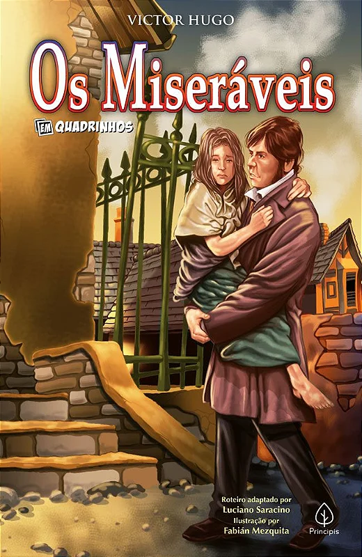

SEJAM BEM-VINDOS AO POD QUEST
CONFIRA NOSSA ENTREVISTA!!!
Livro Os Miseráveis
Olá!
Esse é o nosso site sobre o trabalho do livro os miseráveis para a feira literária 2023
Mas antes o que é um Podcasting?
Podcasting é uma forma de publicação de ficheiros multimídia (áudio, vídeo, foto, PPS, etc.) na Internet para assistir ao vivo ou descarregar automaticamente.[1] A palavra "podcasting" é uma junção de iPod - marca do aparelho multimídia homónimo, da Apple Inc., que é sigla de "Personal On Demand" (numa tradução literal, algo pessoal e sob demanda) - e broadcasting (radiodifusão). O conjunto de ficheiros ou arquivos publicados por podcasting é chamada de podcast. O autor de um podcast é chamado podcaster.
Significado da logo
Matheus
"O Pod Quest que elaborei possui duas palavras, o Pod que representa o podcast e o Quest que representa questionário. As letras coloquei mais detalhadas pois chama atenção e são bem mais bonitas, o "Pod" coloquei de azul pois achei legal e tem como significado a tranquilidade, já o "Quest" deixei em branco pois transmite a sensação de paz e por fim coloquei um microfone por trás das letras para representar o símbolo do podcast."
Livro

Victor-Marie Hugo, autor do livro Os Miseráveis, nasceu em 26 de fevereiro de 1802, em Ville de Besançon, ou Besanção ou ainda, Versanção, na região da Borgonha, noroeste da França, que tinha, em 2015, aproximadamente 116 mil habitantes. Sua morte ocorreu em 22 de maio de 1885, em Paris, capital do país. Além de Os Miseráveis, outra obra do autor ficou mundialmente conhecida: Notre Dame de Paris, mais popularmente conhecida como O Corcunda de Notre Dame. O livro, clássico best seller, tem sua ambientação na França do século XIX, época de extrema desigualdade social, e teve sua primeira publicação em 1862. A história se passa na França, em período entre duas batalhas: a batalha de Waterloo e os motins de junho de 1832. Para escrever a obra, o autor precisou passar por um profundo amadurecimento, levando cerca de 20 anos para concluí-la. Só para ter uma ideia, Os Miseráveis teve seus primeiros rascunhos ainda na década de 1840, mas foi somente bem depois disso que o autor conseguiu finalizá-la. Logo após a publicação o livro já se tornou um sucesso e mesmo em um mundo pouco conectado, não demorou muito para ter as primeiras traduções para alemão, italiano, inglês e português. A obra-prima da literatura foi adaptada para o cinema inúmeras vezes, tendo, em uma destas versões, conquistado 3 estatuetas do Oscar da Academia de Hollywood em 2013 deixando as pessoas encantadas. As versões do livro Os Miseráveis adaptadas para o teatro, sempre foram coroadas de êxito, sendo que a peça, em forma de musical, tem sido apresentada em Londres, no Barbican Arts Centre desde 1985, sem interrupção, recebendo sempre excelentes avaliações de público e de crítica, atestando seu sucesso.
.png)